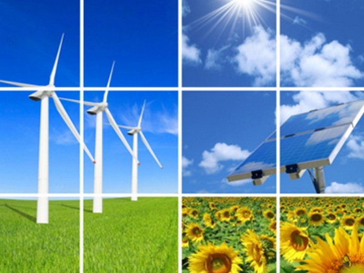
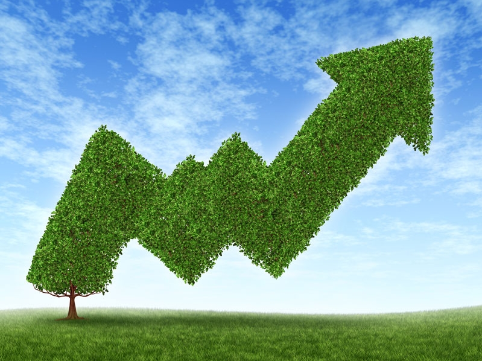
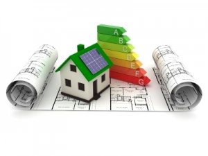

|
 Енергозбереження стосується зменшення споживання енергії за рахунок використання меншої кількості енергетичних послуг.
Енергозбереження відрізняється від енергоефективності, яке стосується використання меншої кількості енергії в тій самій послузі. Наприклад, менше користуватись
авто — енергозбереження, а пересісти на авто з меншою витратою палива — енергоефективність. Але і енергозбереження, і енергоефективність є техніками зменшення
використання енергії.
Хоч енергозбереження і зменшує споживання енергетичних послуг, його результатом може бути зростання якості довкілля, національної безпеки, та особистої фінансової безпеки.
Енергозбереження знаходиться на вершині сталої енергетичної ієрархії |
Для заохочення споживачів зменшувати споживання енергії деякі країни запровадили енергетичні або вуглецеві податки. Вуглецеві податки можуть
спричиняти зміну споживання енергії з викопного палива на атомну енергетику та інші альтернативи, які мають свої обмеження та наслідки впливу на довкілля.
Натомість, енергетичні податки спрямовані на загальне зниження споживання енергії (будь-якого походження), і відповідно на зниження більшого спектру негативних наслідків
для довкілля, спричинений виробництвом енергії. Наприклад, в США штат Каліфорнія застосовує прогресивну шкалу енергетичного податку, коли кожен споживач має встановлений
рівень споживання енергії, для якого податок низький. Але при перевищенні споживання понад визначену стелю, податок зростає експоненціально. Такі програми спрямовані на
захист біднішого населення і створення більшого податкового тягаря на господарства з високим рівнем споживання енергії.
З обмеженнями, але прикладом такого енергетичного податку в Україні може бути ціна на газ для населення (залежить від річного обсягу споживання). Обмеження викликані тим,
що прогресивна шкала ціни була встановлена не як енергетичний податок, а для регулювання дотацій.
|
Одним з перших шляхів до покращення енергозбереження у будинках є енергоаудит. Енергоаудит — це інспекція та аналіз використання енергії
та можливостей для енергозбереження у будинку, процесі чи системі для зменшення використання енергії системою без негативного впливу на результат її роботи. Як правило
він здійснюється кваліфікованим персоналом і може бути частиною національної програми.
Крім того, нещодавні розробки додатків до смартфонів дозволяють власникам житла самостійно проводити відносно складні енергоаудити.
Будівельні технології та розумні лічильники можуть дозволити користувачам енергії, комерційним та приватним, графічно бачити, як їхнє споживання енергії впливає на їхню
роботу чи домівку, а більш просунута технологія — і допомагати економити енергію. |
Виконав учень 12 групи: Булига Олег |